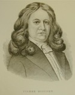

Beaubien-Perrault-Benington - Person Sheet
Beaubien-Perrault-Benington - Person Sheet
NameJeanne Crevier
Birth1636, France
Death1727
FatherChristophe Crevier Dit La Meslée (1611-1662)
MotherJeanne Evrard (1619->1682)
Spouses

Birth1 Aug 1622, Mortagne, Perche, France
Death19 Apr 1717, Boucherville, Québec
Occupationinterprète, juge, seigneur
FatherGaspard Boucher (~1599-1662)
MotherNicole Lemer
Marriage9 Jul 1652, Québec, Québec
ChildrenPierre (1653-1740)
M. dite M. Ursule (1655-1733)
Lambert (1656-1699)
Ignace Joseph (1659-1699)
M. Madeleine (1661-1739)
Marguerite (1663-1698)
Philippe (1665-1721)
Jean (1667-1744)
René (1668-1742)
Jeanne (Twin) (1670-1703)
Louise (Twin) (1670-1756)
Nicolas (1672-1733)
Jacques (Twin) (1673-1688)
Jean Baptiste (Twin) (1673-1748)
Geneviève (1676-1766)